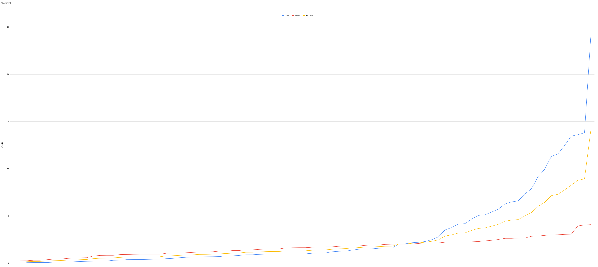
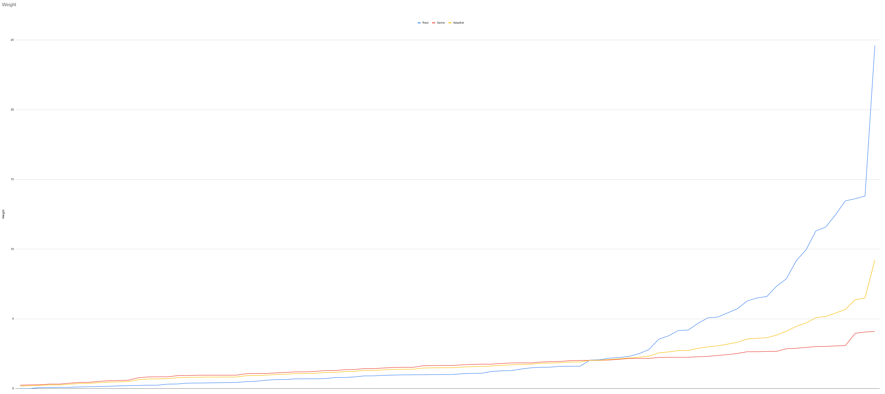
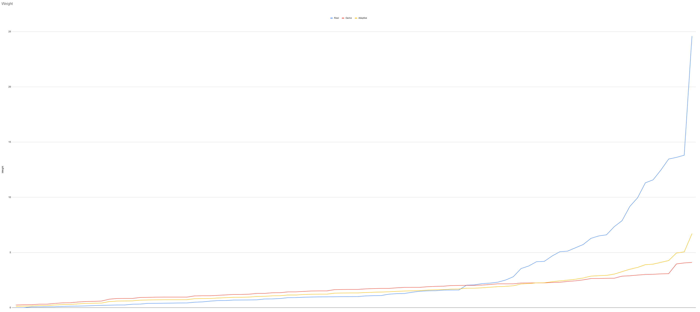

В этой статье я описываю принцип расчёта нового веса для экипировки в моде Resolver. Подробнее ознакомиться с результатами исследования можно здесь
Что-бы нормально перебалансировать вес всех предметов, я решил не просто прикидывать что "этот предмет легче этого, а вон тот легче того"
, а рассчитать реальный вес каждого предмета и потом при необходимости адаптировать их под игру.
Вычисление веса
Итак немного вспомним физику. Как вычисляется масса:
То есть, что-бы узнать вес каждого предмета, достаточно узнать его объём и плотность. Первое можно получить в Blender включив встроенный плагин 3D Print Toolbox. А для второго я просто прошурстил интернет для получения вот такой таблицы плотностей:
{kind=link}
Таблица
Да для этого необходимо так-же и разделять модель на части там где используется другой материал, а для тканей и бумаги я просто считал поверхность (заранее удаляя лишние полигоны, в некоторых случаях убирая объём модели)
, и умножал на плотность в м².
Примечание! Все расчёты приблизительные, по множеству факторов: вычисление объёма по Low Poly моделям, не имение точной информации об используемых материалов у некоторых масок, не всегда учитывались материалы запечённые в текстуре и т.д.
Адаптирование веса под игровой баланс
Для адаптации нужно что-бы кривая реального веса стремилась к кривой игрового, при этом чем дальше реальное значение находиться от игрового, тем сильнее оно должно приближаться к нему. Однако адаптированные значения должны сохранять соотношения с другими.
Наиболее подходящий результат дало получение среднего значения между двумя значениями:
{kind=link}
Но поскольку тяжёлые предметы всё ещё остались очень тяжёлыми пришлось его ещё раз усреднить к игровым показателям:
{kind=link}
Затем я понизил значения на 10% от реального значения, что ещё сильнее приблизило тяжёлые предметы к игровым:

И на конец итоговые значения опустил на 6%, что-бы приблизить значения к игровому балансу, но сохранить соотношения:
{kind=link}